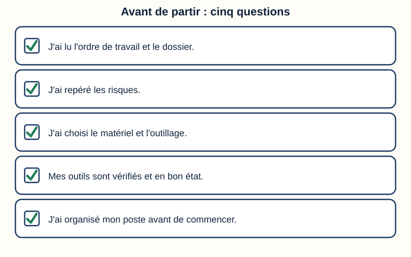
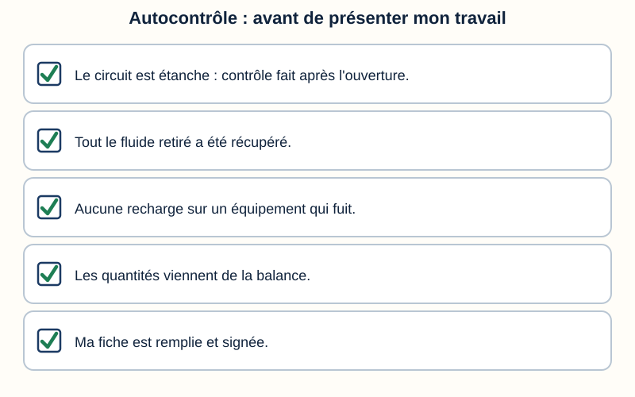
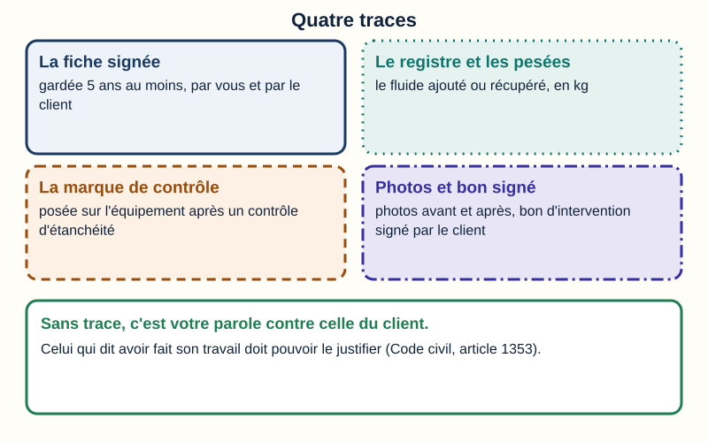
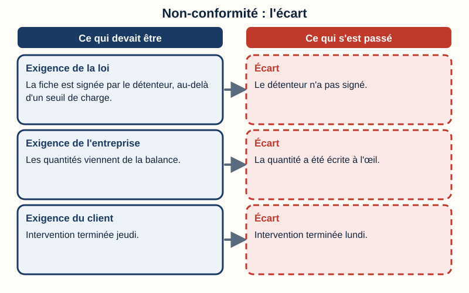
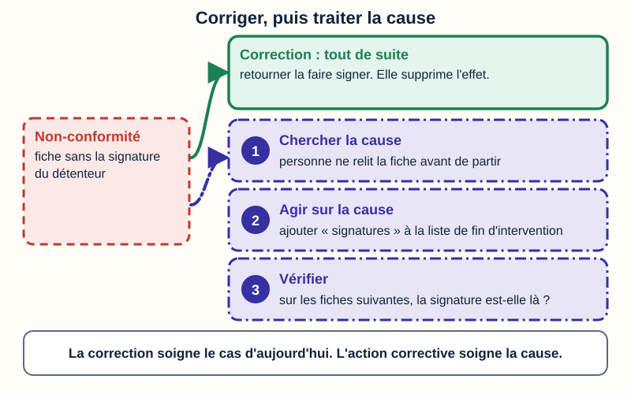
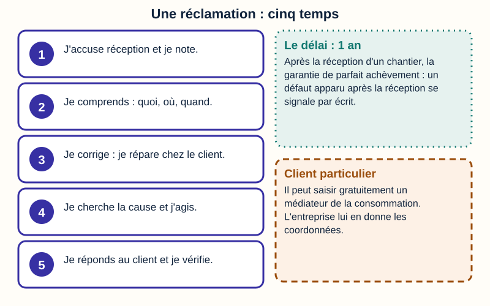
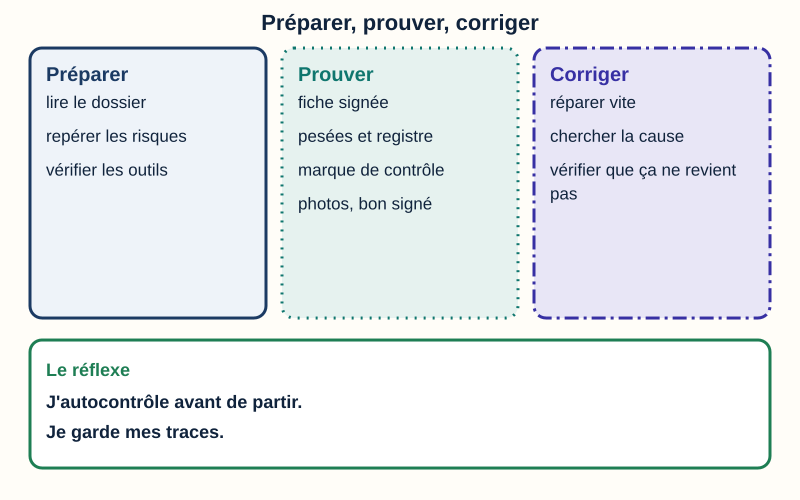

Mini-station commentée · 8 écrans et 4 questions · environ 12 minutes
Objectif
À la fin de la station, vous savez ce qu'est une démarche qualité sur une intervention : préparer et bien faire du premier coup, le prouver avec des traces, et corriger quand quelque chose ne va pas (non-conformité, réclamation, action corrective).
Sert notamment pour
TP TECVC, REAC TP-00133 : hors REAC (culture professionnelle du technicien et du chargé d'affaires)
Bac Pro MFER (2028) : savoir S7.1 « le processus qualité » (le référentiel cite l'amélioration continue, les autocontrôles et la traçabilité)
Pour l'écran « Préparer » : tâches T5 à T8 du CAP IFCA et A1T1, A1T3, A1T4 du Bac Pro MFER (2028)
Chaque écran peut être expliqué à voix haute : le bouton « Écouter » commente ce que vous voyez. Rien n'est dit qui ne soit aussi écrit.
1 / 12
Écran 1 sur 8
La qualité, c'est quoi sur un chantier ?
Une démarche qualité, c'est une façon de travailler pour bien faire du premier coup, le prouver, et corriger ce qui ne va pas. On parle aussi d'amélioration continue, d'autocontrôles et de traçabilité.
Préparer : lire le dossier, repérer les risques, choisir et vérifier le matériel.
Faire et contrôler : travailler selon la méthode, puis contrôler soi-même son travail.
Prouver : laisser des traces (fiche signée, pesées, photos).
Corriger : quand quelque chose ne va pas, réparer, puis chercher la cause.
Des normes existent pour les entreprises qui s'organisent ainsi, par exemple la norme ISO 9001 (« Systèmes de management de la qualité — Exigences »). Elle est payante : on ne la détaille pas ici.

Préparer, faire, contrôler, corriger : puis on recommence.
Écran 2 sur 8
Préparer : bien faire du premier coup
La qualité commence avant d'arriver chez le client. Cinq questions à se poser :
J'ai lu l'ordre de travail et le dossier.
J'ai repéré les risques.
J'ai choisi le matériel et l'outillage.
Mes outils sont vérifiés et en bon état.
J'ai organisé mon poste avant de commencer.
Pour une entreprise qui manipule du fluide, l'outillage compte double : son dossier d'attestation de capacité garde la date de la dernière vérification de chaque outil (station « L'entreprise du froid »).

Cinq questions à se poser avant de partir.
Écran 3 sur 8
Autocontrôler : vérifier son propre travail
Un autocontrôle est un contrôle que vous faites vous-même sur votre travail, avant de le présenter au client ou au professeur.
Le circuit est étanche. Après une ouverture du circuit en maintenance, on fait un contrôle d'étanchéité (« non périodique » sur la fiche d'intervention).
Tout le fluide retiré est récupéré : on ne le laisse pas partir dans l'air (articles R. 543-87 et R. 543-88).
On ne recharge pas un équipement qui fuit (article R. 543-89).
Les quantités viennent de la balance, pas de l'œil.
La fiche est remplie et signée (station « Remplir la fiche d'intervention et le bordereau des déchets »).

Cinq vérifications, avant d'appeler le client ou le professeur.
Écran 4 sur 8
Prouver : laisser des traces
Bien faire ne suffit pas : il faut pouvoir le montrer. Le Code civil dit que celui qui réclame l'exécution d'une obligation doit la prouver, et que celui qui se prétend libéré doit justifier le fait qui a éteint son obligation (article 1353). Pour une entreprise : si vous dites avoir fait le travail, ce sont vos traces qui le prouvent.
La fiche d'intervention signée, gardée 5 ans au moins par l'opérateur et par le détenteur (article R. 543-82).
Le registre de l'équipement et les pesées : le fluide ajouté ou récupéré (station « Traçabilité »).
La marque de contrôle posée sur l'équipement après un contrôle d'étanchéité (article R. 543-79-1).
Les photos avant et après, et le bon d'intervention signé par le client : ce n'est pas imposé partout, mais c'est une bonne pratique d'entreprise.

Quatre traces : sans elles, c'est votre parole contre celle du client.
Écran 5 sur 8
Quand ça ne va pas : la non-conformité
Une non-conformité, c'est une exigence qui n'a pas été respectée. L'exigence peut venir de la loi, de l'entreprise (sa méthode) ou du client.
Loi : la fiche doit être signée par le détenteur au-delà d'un seuil de charge (article R. 543-82). Le détenteur n'a pas signé : c'est une non-conformité.
Entreprise : « les quantités viennent de la balance ». Le technicien a écrit la quantité à l'œil : c'est une non-conformité.
Client : intervention terminée jeudi. Elle est terminée lundi : c'est une non-conformité.
Une non-conformité n'est pas une faute à cacher : c'est une information. La repérer vite, c'est pouvoir la corriger avant que le client ne la trouve.

Une non-conformité, c'est l'écart entre ce qui devait être et ce qui s'est passé.
Écran 6 sur 8
Corriger : la correction, puis la cause
Deux mots à ne pas mélanger (fiche pratique AFNOR sur les normes ISO 9001 et ISO 14001) :
La correction supprime les effets de la non-conformité. Elle se fait vite.
L'action corrective cherche la cause et agit dessus pour que la non-conformité ne revienne pas. On vérifie ensuite qu'elle ne revient pas.
Exemple. La fiche n'a pas été signée par le détenteur. Correction : on retourne la faire signer. Action corrective : on cherche pourquoi (personne ne relit la fiche avant de partir), on ajoute « signatures » à la liste de fin d'intervention, et on vérifie sur les fiches suivantes.

La correction soigne le cas d'aujourd'hui ; l'action corrective soigne la cause.
Écran 7 sur 8
La réclamation du client
Une réclamation, c'est le client qui vous signale un problème après l'intervention. On la traite comme une non-conformité, en cinq temps : accuser réception et noter, comprendre, corriger, chercher la cause et agir, répondre et vérifier.
Après un chantier : pendant 1 an après la réception, l'entrepreneur répare les désordres signalés par le client, dans les réserves du procès-verbal ou par écrit pour ceux qui apparaissent après la réception (Code civil, article 1792-6).
Client particulier : il a le droit de recourir gratuitement à un médiateur de la consommation, et le professionnel doit lui en donner les coordonnées (Code de la consommation, articles L. 612-1 et L. 616-1).
Pour aller plus loin : la station « Les garanties ».

Une réclamation se traite comme une non-conformité, avec deux repères de la loi.
Écran 8 sur 8
Bilan : préparer, prouver, corriger
Préparer : lire le dossier, repérer les risques, vérifier les outils.
Prouver : fiche signée, pesées et registre, marque de contrôle, photos et bon signé.
Corriger : réparer vite (correction), chercher la cause (action corrective), vérifier que ça ne revient pas.
Une réclamation n'est pas une attaque : c'est l'occasion de corriger la cause.
Le réflexe : j'autocontrôle avant de partir, je garde mes traces.

Trois mots à retenir : préparer, prouver, corriger.
Question 1 sur 4
Vous venez de changer un filtre déshydrateur (le circuit a été ouvert). Quel autocontrôle ne devez-vous pas oublier ?
Rappel de l'écran 3 — les cinq vérifications.
Question 2 sur 4
Un client dit : « Vous n'avez pas récupéré le fluide ». Que vous faut-il pour le prouver ?
Rappel de l'écran 4 — quatre traces.
Question 3 sur 4
Une fiche n'a pas été signée par le détenteur. Quelle est l'action corrective ?
Rappel de l'écran 6 — correction, puis action corrective.
Question 4 sur 4
Un défaut apparaît 5 mois après la réception d'un chantier. Comment le client le signale-t-il pour la garantie de parfait achèvement ?
Rappel de l'écran 7 — le délai d'un an.
Les correspondances de la station
Les garanties (même sous-ligne) — parfait achèvement, bon fonctionnement, décennale : ce que le client peut exiger après la réception.